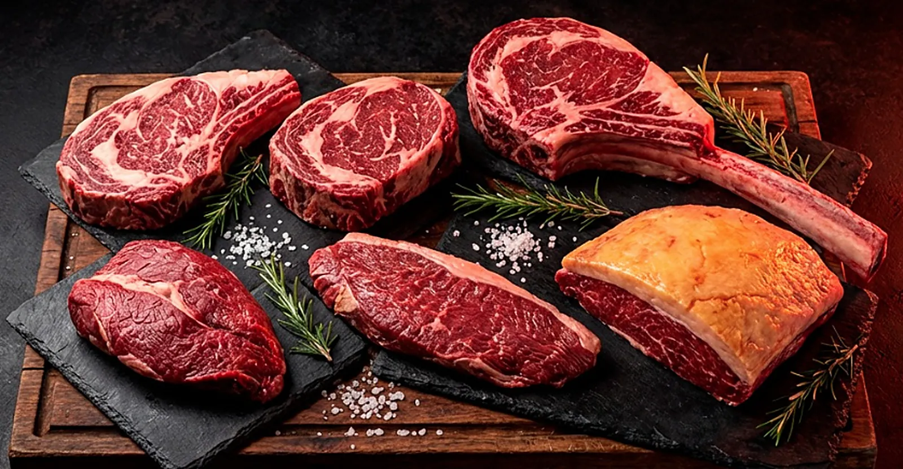
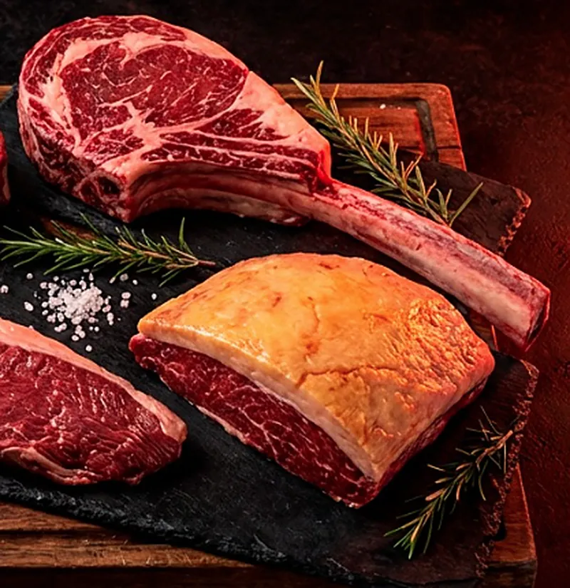
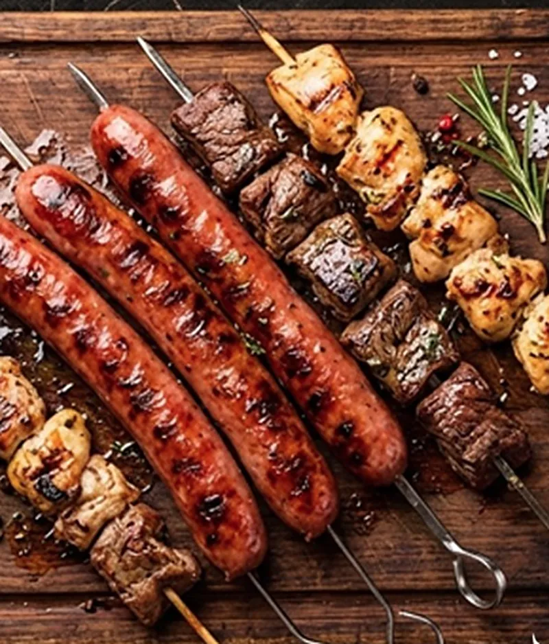
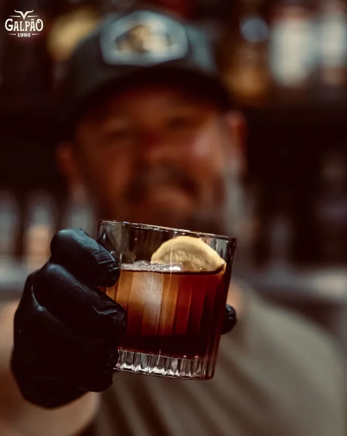
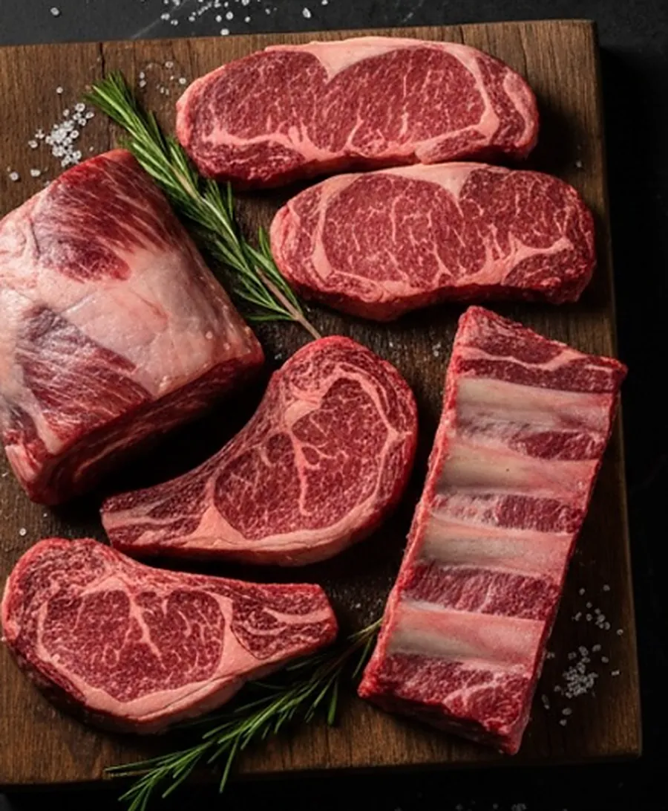
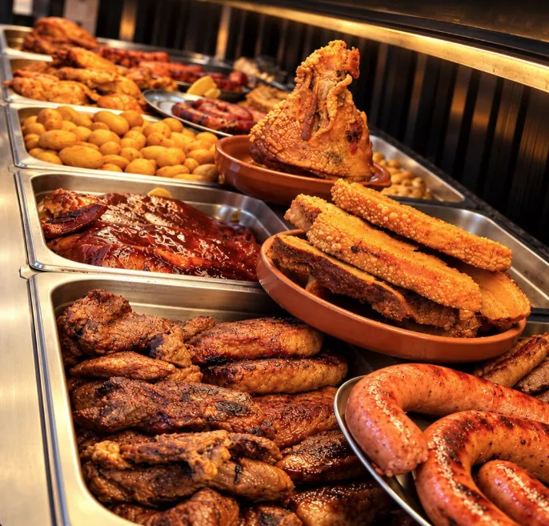
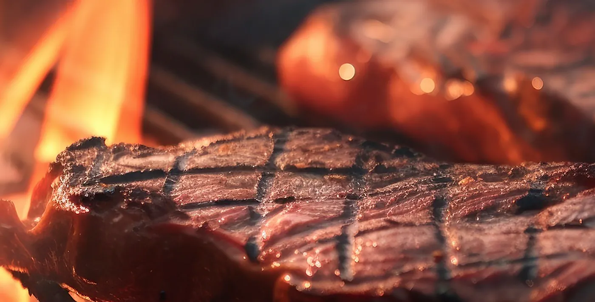

Açougue•Churrascaria•Bar
Carne de verdade. Churrasco de verdade.
Cortes selecionados, carnes premium e muito sabor no coração de Paulínia.
Paulínia • SP
Experiência Galpão 1982
Muito mais que um açougue.
No Galpão 1982 você encontra carnes selecionadas, cortes especiais, churrasco preparado na hora e um espaço para reunir família e amigos.

Açougue
Carnes selecionadas e cortes especiais para deixar o seu churrasco ainda melhor.
Ver o açougue
Churrascaria
Churrasco, buffet e comida preparada para quem gosta de comer bem.
Ver o almoço
Bar
Churrasco, bebida gelada e um ambiente para aproveitar bons momentos.
Ver o bar
Açougue Galpão
Carnes nobres para o seu churrasco.
Encontre cortes selecionados, carnes premium e opções para transformar seu churrasco em uma experiência especial.
- Cortes selecionados
- Carnes premium
- Kits para churrasco
- Qualidade e procedência
Destaques do açougue
- Chorizo
- Ancho
- Tomahawk
- Capitão
- Vazio
- Picanha Reserva
- Espetos
- Kit Burger

Almoço no Galpão
Churrasco e comida boa esperam por você.
Buffet, churrasco e aquele sabor que combina com almoço em família, amigos ou até aquele almoço rápido durante a semana.
Almoço
Segunda a sábado
11h às 15h

O churrasco
começa aqui.
Da escolha do corte até a brasa.
@galpao1982
Do nosso Galpão para sua tela.
Acompanhe novidades, cortes e tudo que acontece por aqui.
Siga @galpao1982Localização
Estamos em Paulínia.
Av. José Paulino, 3802Paulínia - SP
Horário geral
- Segunda a sábado
- 08h às 19h
- Domingo
- 08h às 13h
Almoço
- Segunda a sábado
- 11h às 15h
Seu próximo churrasco começa aqui.
Quer saber sobre cortes, kits, almoço ou outras informações?
Chame o Galpão 1982.
Telefone: (19) 3363-1012